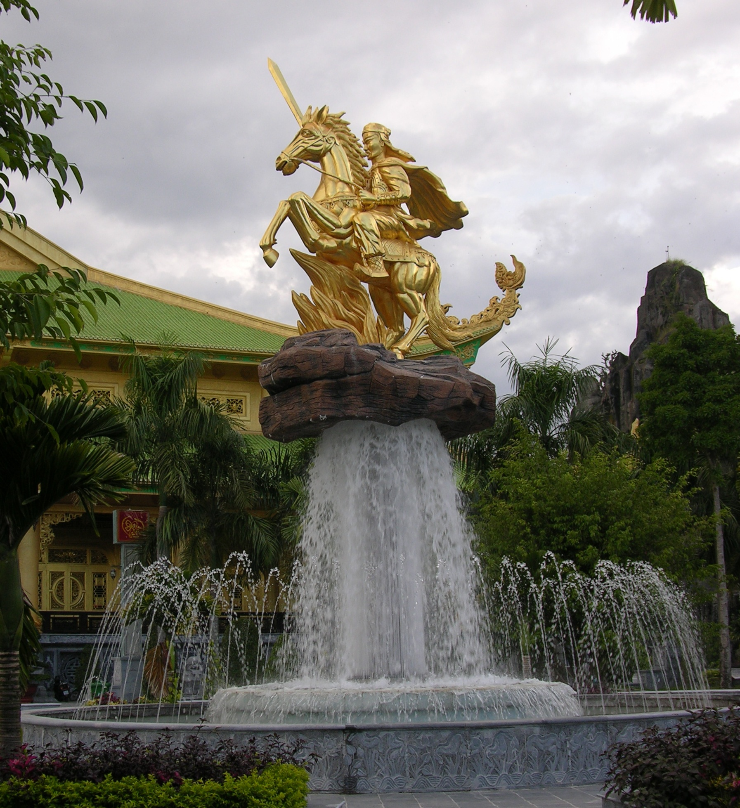

Lý Thường Kiệt và cuộc kháng chiến chống Tống 1075 – 1077
Tư liệu về chiến lược "tiên phát chế nhân" và trận quyết chiến trên phòng tuyến sông Như Nguyệt.
Đang mở cánh cửa lịch sử...
Danh tướng thời Lý · 1019 – 1105
Người viết nên phòng tuyến Như Nguyệt và bài thơ thần Nam Quốc Sơn Hà
Giới thiệu
Lý Thường Kiệt (1019 – 1105) tên thật là Ngô Tuấn, tự Thường Kiệt, quê ở phường Thái Hòa, thành Thăng Long (nay thuộc Hà Nội). Ông xuất thân trong một gia đình có truyền thống võ nghiệp, được vua Lý Thái Tông cho theo hầu từ khi còn trẻ và nhanh chóng nổi tiếng nhờ sự thông minh, gan dạ cùng tài năng quân sự hiếm có.
Trải qua ba đời vua Lý Thái Tông, Lý Thánh Tông và Lý Nhân Tông, ông giữ nhiều trọng trách từ Thái úy, Đại úy đến Đại tướng quân — trở thành trụ cột của triều đình và là người tổ chức lực lượng quân đội Đại Việt theo hướng tinh nhuệ, kỷ luật và chủ động.
Tên tuổi của ông gắn chặt với cuộc kháng chiến chống Tống (1075 – 1077): chủ động đánh sang đất Tống để phá thế chuẩn bị của địch, sau đó lập phòng tuyến kiên cố trên sông Như Nguyệt và đánh tan đại quân nhà Tống, buộc đối phương phải giảng hòa rút quân.
Cũng tại phòng tuyến ấy, bài thơ thần "Nam quốc sơn hà" — bản tuyên ngôn chủ quyền sớm nhất còn lưu truyền của dân tộc — được cho là đã vang lên giữa đêm để khích lệ tinh thần binh sĩ, khẳng định nước Nam có vua riêng, có phần định riêng tại "sách trời".
Bên cạnh vai trò quân sự, Lý Thường Kiệt còn là nhà chính trị, nhà ngoại giao khéo léo. Chiến thắng của ông đi kèm một hành xử đáng chú ý: chủ động đề nghị giảng hòa để "không làm tổn thương lòng tự trọng" của nhà Tống, qua đó giữ được hòa hiếu lâu dài giữa hai nước.
Trang web này tập hợp thông tin, hình ảnh và video về thân thế, sự nghiệp, các trận đánh và di sản mà Lý Thường Kiệt để lại cho lịch sử Việt Nam — như một phòng tư liệu nhỏ để mỗi người xem hiểu thêm về một trong những danh tướng lỗi lạc nhất của dân tộc.

tuổi (1019 – 1105)
đời vua nhà Lý mà ông phò tá
chiến thắng Như Nguyệt
Nhân vật lịch sử
Nhấn "Xem tiểu sử" để đọc chi tiết về thân thế, bối cảnh lịch sử, chiến công và ý nghĩa của từng nhân vật — bắt đầu từ Lý Thường Kiệt.
Dòng chảy thời gian
Nhấn vào từng mốc để xem chi tiết bối cảnh và ý nghĩa lịch sử.
Tư liệu lịch sử
Chiến lược "tiên phát chế nhân", phòng tuyến Như Nguyệt và những trang sử được viết nên dưới tài thao lược của Lý Thường Kiệt.
Thư viện
Tư liệu hình ảnh về Lý Thường Kiệt, phòng tuyến Như Nguyệt và thời kỳ nhà Lý. Nhấn vào ảnh để xem ở chế độ toàn màn hình.
Tư liệu phim
Những thước phim tài liệu giúp hình dung rõ nét hơn về con người và chiến công của Lý Thường Kiệt.
Tư liệu về chiến lược "tiên phát chế nhân" và trận quyết chiến trên phòng tuyến sông Như Nguyệt.
Bản tuyên ngôn chủ quyền đầu tiên của dân tộc, được cho là vang lên tại phòng tuyến Như Nguyệt để khích lệ tinh thần binh sĩ.
Bối cảnh lịch sử nơi Lý Thường Kiệt sinh ra, trưởng thành và phò tá ba đời vua nhà Lý.
Ý nghĩa lịch sử
Di sản lớn nhất của Lý Thường Kiệt nằm ở tư duy quân sự chủ động. Thay vì ngồi chờ địch đến, ông chủ trương "tiên phát chế nhân" — đánh trước để phá thế chuẩn bị của đối phương. Năm 1075, ông chỉ huy quân Đại Việt tiến đánh các châu Ung, Khâm, Liêm trên đất Tống, rồi rút về nước đúng lúc, khiến nhà Tống mất thế chủ động trong suốt thời gian đầu cuộc chiến.
Năm 1077, khi đại quân Tống do Quách Quỳ chỉ huy tiến sang, ông tổ chức phòng tuyến trên sông Như Nguyệt (sông Cầu) — một chiến lũy kết hợp giữa chướng ngại vật, lực lượng thủy bộ và tinh thần chiến đấu được củng cố liên tục. Quân Tống nhiều lần tìm cách vượt sông nhưng đều bị đẩy lui.
Gắn với phòng tuyến ấy là bài thơ thần "Nam quốc sơn hà" — bốn câu thơ khẳng định nước Nam có vua riêng và ranh giới đã được "sách trời" định sẵn: "Nam quốc sơn hà Nam đế cư, tiệt nhiên định phận tại thiên thư". Bài thơ được xem là bản tuyên ngôn độc lập đầu tiên bằng văn tự còn lưu truyền của dân tộc.
Điều đáng chú ý ở Lý Thường Kiệt còn là cách ông kết thúc chiến tranh. Khi quân Tống đã suy yếu và có ý rút, ông chủ động đề nghị giảng hòa — được ghi lại trong sử sách như một cách "không làm tổn thương lòng tự trọng" đối phương, để tránh một cuộc đối đầu kéo dài và giữ quan hệ hòa hiếu giữa hai nước.
Về sau, ông tiếp tục được tin dùng trong các trọng trách quân sự và được giao trấn giữ vùng biên ải phía Bắc. Ông qua đời năm 1105, để lại một sự nghiệp gắn liền với thời kỳ thịnh trị của nhà Lý và với ý thức chủ quyền lãnh thổ được khẳng định rõ ràng nhất từ trước đến khi đó.
Tên ông ngày nay được đặt cho nhiều đường phố, trường học trên khắp Việt Nam, và bài thơ Nam Quốc Sơn Hà vẫn được giảng dạy như một trong những dấu mốc đầu tiên của tư tưởng độc lập dân tộc trong lịch sử nước nhà.